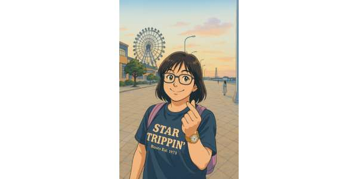

| 科目 | 教師 | 照片 | 介紹 |
| 國文 星閱讀 |
洪郁婷老師 | 郁婷老師是我們的712班 的國文和星閱讀老師，她 總是會在國文課中補充許 多課外的知識以及成語的 故事，她上課時非常溫柔， 目前還沒有罵人過。 📍綽號:銘傳張鈞甯 🗣️口頭禪:你總不會那麼 可憐吧! 📸照片來源:GOOGLE |
|
| 數學 | 余蘇珊老師 | 蘇珊老師經驗豐富，總 是在上數學課時給我們 許多練習，也總是天天 都會上傳線上的相關 教材給回家要複習的同學 參考，是一位非常負責任 老師。 📍綽號:Susan 🗣️口頭禪:同學，請打開作業 第OO頁 📸照片來源:GEMINI |
|
| 自然 | 張月芬老師 |  |
月芬老師上課時總是有 說不完的笑話和故事， 讓我們上課不會想要 睡覺，她上課時也會幫 我們科普一些課外知識， 讓我們更增廣見聞。 🗣️口頭禪:來賓/親愛的OOO， 起床囉! 📸照片來源:GEMINI |
| 英文 | 高梓玹(Billy)老師 | Billy老師在上英文課時 總是會很細心的教導我們 每一個單字和文法，也會 補充許多單字的知識，總是 會細心的製作許多和課程 有關的遊戲讓我們上課不無 勞! 📸照片來源:教師提供 |
|
| 地理 | 余鈴觀老師 | 鈴觀老師在上課時總是會 帶著我們一格一格的寫講義， 而且老師上課的講義和簡報 都製作的非常精美，讓同學 們可以很輕鬆的學習。老師上完每一個單元就會讓我們有 多的考試和作業，希望我們可以加深學習記憶。 📸照片來源:教師提供 |
|
| 歷史 班導 綜合一 山海觀 |
李珮伶老師 | 我們712班的班導是珮伶老師，她主要教的科 目是歷史和山海觀，七上一開學時就已經下定決心要陪 伴我們3年，是一位非常負責任的老師!她總是在每次段考 前就幫我們安排考試，而當我在段考時考不好 時，她也會幫我們分析那些部分是需要再多加強的部 分，非常盡責! 📸照片來源:教師提供 |
|
| 公民 | 蔡毓真老師 | 教師不願 提供照片 |
毓真老師每一次上課時都會寫出 滿滿的筆記幫助我們學習， 在段考前她也會告訴我們這次 段考準備的重點，是一位非常 認真的老師! |